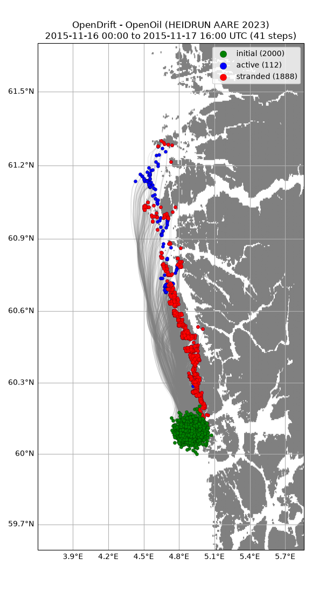
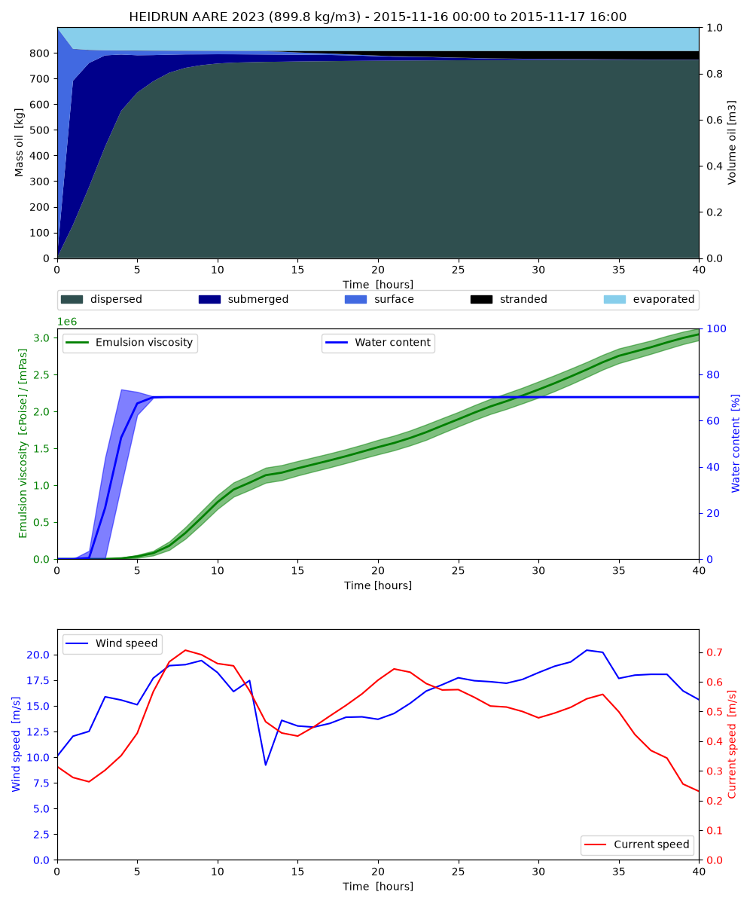
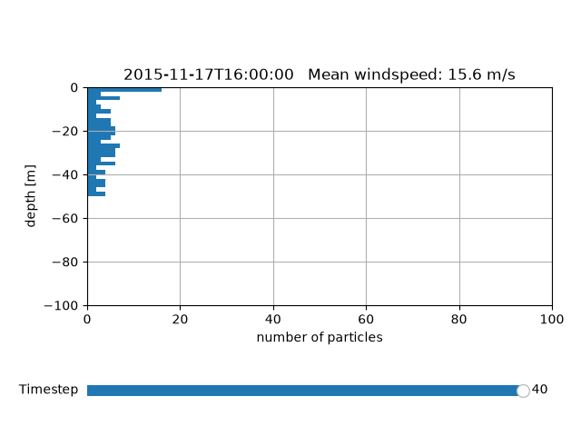
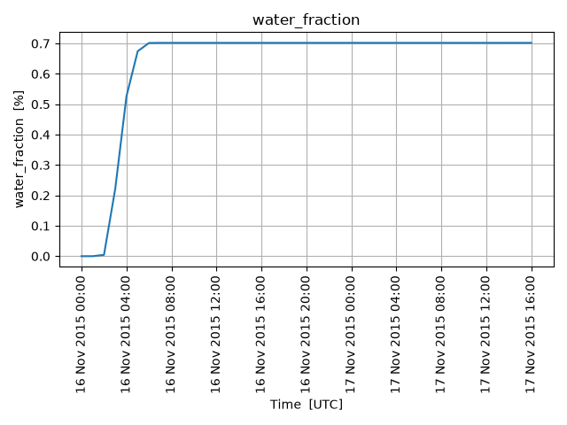
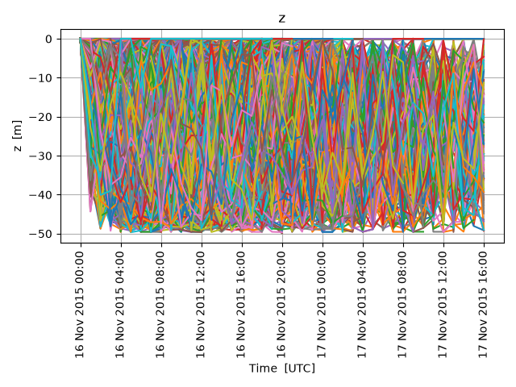
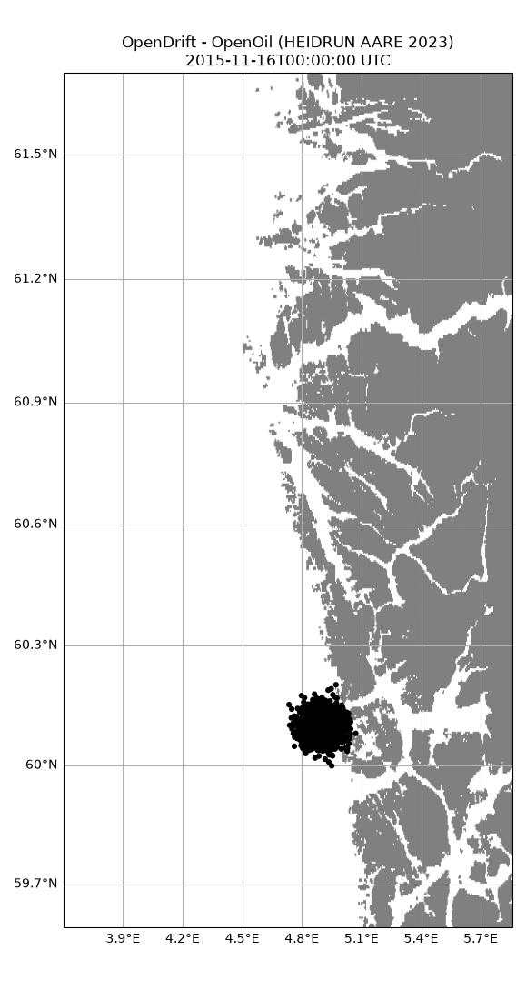

Note
Go to the end to download the full example code.
Openoil
from datetime import datetime, timedelta
from opendrift import test_data_folder as tdf
from opendrift.readers import reader_netCDF_CF_generic
from opendrift.models.openoil import OpenOil
o = OpenOil(loglevel=20, location='Norway')
print(o.oiltypes) # Print available oil types
13:05:13 INFO opendrift:568: OpenDriftSimulation initialised (version 1.14.9 / v1.14.9-15-gc6011b4)
['GENERIC BUNKER C', 'GENERIC DIESEL', 'GENERIC FUEL OIL No. 6', 'GENERIC FUEL OIL No.2', 'GENERIC GASOLINE', 'GENERIC HEAVY CRUDE', 'GENERIC HEAVY FUEL OIL', 'GENERIC HOME HEATING OIL', 'GENERIC INTERMEDIATE FUEL OIL 180', 'GENERIC INTERMEDIATE FUEL OIL 300', 'GENERIC LIGHT CRUDE', 'GENERIC MEDIUM CRUDE', 'AASGARD A 2003', 'AASTA HANSTEEN BLEND 2020', 'ALTA 2016', 'ALVE 2010', 'ALVE 2014', 'ALVHEIM BLEND 2009', 'ALVHEIM BOA 2009', 'ALVHEIM KAMELEON 2009', 'ALVHEIM KNELER 2009', 'ASGARD, STATOIL', 'ATLA KONDENSAT 2013', 'AVALDSNES 2012', 'BALDER 2002', 'BALDER BLEND 2010', 'BALDER BLEND 2025', 'BLANE 2009', 'BOYLA CRUDE 2016', 'BRAGE 2013', 'BRASSE 2018', 'BREAM 2011', 'BREIDABLIKK 2023', 'BRYNHILD CRUDE 2015', 'CALYPSO 2024', 'CAURUS 2011', 'CERISA 2025', 'DRAUGEN 2008', 'DRIVIS 2017', 'DUGONG 2022', 'DUVA 2021', 'DVALIN 2020', 'EKOFISK 2002', 'EKOFISK BLEND 2000', 'EKOFISK BLEND 2011', 'EKOFISK J 2015', 'ELDFISK 2002', 'ELDFISK B 2015', 'ELDFISK BLEND 2011', 'ELDFISK KOMPLEKS 2015', 'ELLI 1999', 'ELLI SOUTH 1999', 'EMBLA 2002', 'FENJA (PIL) 2015', 'FOGELBERG CONDENSATE 2021', 'FORSETI 2002', 'FOSSEKALL 2013', 'FRAM 2013', 'FROSK 2020', 'FROY 1996', 'GARANTIANA 2013', 'GAS OIL 10 ppm S 2017', 'GAUPE 2011', 'GINA KROG CRUDE 2018', 'GJOA 2011', 'GLITNE 2002', 'GOLIAT BLEND 50/50 2008', 'GOLIAT BLEND 70/30 2008', 'GOLIAT KOBBE 2008', 'GOLIAT REALGRUNNEN 2001', 'GOLIAT REALGRUNNEN 2008', 'GRANE 1997', 'GROSBEAK 2012', 'GUDRUN 2012', 'GUDRUN 2019', 'GULLFAKS A BLEND 2010', 'GULLFAKS C BLEND 2010', 'GULLFAKS SOR 1996', 'GYDA 2002', 'HAVIS 2013', 'HEAVY DISTILLATE MARINE ECA 50 2017', 'HEIDRUN AARE 2023', 'HEIDRUN AaRE 2004', 'HEIDRUN EXPORT BLEND 2004', 'HEIDRUN TILJE 2004', 'HULDRA KONDENSAT 1998', 'IFO-180LS 2014', 'IFO-180NS 2014', 'IFO-380LS 2014', 'IFO-80LS 2014', 'IRIS CONDENSATE 2020', 'IVAR AASEN 2012', 'JORDBAER 2011', 'KRISTIN 2006', 'KVITEBJORN 2009', 'KVITEBJORN 2019', 'LANGFJELLET 2023', 'LAVRANS 1997', 'LILLE PRINSEN 2022', 'LILLEFRIGG KONDENSAT 1996', 'LINERLE 2005', 'LUNO 2011', 'LUNO II 2014', 'MARIA 2013', 'MARINE GAS OIL 500 ppm S 2017', 'MARTIN LINGE CONDENSATE 2016', 'MARTIN LINGE CRUDE 2016', 'MARULK 2014', 'MIDGARD 1991', 'MORVIN 2008', 'NJORD 1997', 'NJORD 2003', 'NORNE 1997', 'NORNE BLEND 2010', 'NORNE CRUDE 2017', 'ODA 2019', 'OFELIA 2023', 'ORMEN LANGE KONDENSAT 2008', 'OSEBERG A 2013', 'OSEBERG BLEND 2007', 'OSEBERG C 1995', 'OSEBERG C 2013', 'OSEBERG OST 1998', 'OSEBERG OST 2013', 'OSEBERG SOR 2000', 'OSEBERG SOR 2013', 'OSEBERG, EXXON', 'OSELVAR 2012', 'RINGHORNE 2002', 'RINGHORNE 2025', 'ROTTERDAM DIESEL 2017', 'SF NORD BRENT 2021', 'SIGYN CONDENSATE 2017', 'SKARFJELL 2014', 'SKARV 2004', 'SKARV KONDENSAT 2014', 'SKOGUL 2020', 'SKRUGARD 2012', 'SLEIPNER KONDENSAT 2002', 'SLEIPNER VEST 1998', 'SMORBUKK 2003', 'SMORBUKK KONDENSAT 2003', 'SMORBUKK SOR 2003', 'SNOHVIT KONDENSAT 2001', 'SNORRE B 2004', 'SNORRE TLP 2004', 'STAER 2010', 'STATFJORD A 2001', 'STATFJORD B 2001', 'STATFJORD C 2001', 'SVALE 2010', 'SVALIN 2014', 'SYGNA BRENT 2021', 'TAMBAR 2002', 'TAU 1999', 'TOR 2002', 'TOR II 2022', 'TORDIS 2002', 'TRESTAKK 2008', 'TROLL, STATOIL', 'TRYM KONDENSAT 2011', 'TYRIHANS NORD 2004', 'TYRIHANS SOR 2004', 'TYRVING 2025', 'ULA 1999', 'ULTRA LOW SULFUR FUEL OIL 2017', 'UTGARD CONDENSATE 2021', 'VALE 2001', 'VALE 2014', 'VALHALL 2002', 'VALHALL 2021', 'VARG 2000', 'VEGA CONDENSATE 2015', 'VESLEFRIKK 2012', 'VIGDIS 2004', 'VILJE 2009', 'VISUND 2009', 'VISUND CRUDE OIL 2020', 'VISUND SOR CONDENSATE 2020', 'VOLUND 2010', 'VOLVE 2006', 'WIDE RANGE GAS OIL 2017', 'WISTING 2015', 'WISTING CENTRAL 2017', 'YME 2023']
Arome atmospheric model
reader_arome = reader_netCDF_CF_generic.Reader(tdf +
'16Nov2015_NorKyst_z_surface/arome_subset_16Nov2015.nc')
# Norkyst ocean model
reader_norkyst = reader_netCDF_CF_generic.Reader(tdf +
'16Nov2015_NorKyst_z_surface/norkyst800_subset_16Nov2015.nc')
o.add_reader([reader_norkyst, reader_arome])
13:05:13 INFO opendrift.readers:64: Opening file with xr.open_dataset
13:05:14 INFO opendrift.readers.reader_netCDF_CF_generic:340: Detected dimensions: {'time': 'time', 'x': 'x', 'y': 'y'}
13:05:14 INFO opendrift.readers:64: Opening file with xr.open_dataset
13:05:14 INFO opendrift.readers.reader_netCDF_CF_generic:340: Detected dimensions: {'x': 'X', 'y': 'Y', 'z': 'depth', 'time': 'time'}
Adjusting some configuration
o.set_config('processes:evaporation', True)
o.set_config('processes:emulsification', True)
o.set_config('drift:vertical_mixing', True)
o.set_config('vertical_mixing:timestep', 5)
Seeding some particles
time = reader_arome.start_time
oil_type = 'HEIDRUN AARE 2023'
o.seed_elements(lon=4.9, lat=60.1, radius=3000, number=2000,
time=time, z=0, oil_type=oil_type)
13:05:14 INFO opendrift.models.openoil.adios.dirjs:86: Querying ADIOS database for oil: HEIDRUN AARE 2023
13:05:14 INFO opendrift.models.openoil.openoil:1726: Using density 899.8009199999999 and viscosity 5.2282765673226704e-05 of oiltype HEIDRUN AARE 2023
13:05:14 INFO opendrift.models.basemodel.environment:203: Adding a global landmask from GSHHG
13:05:18 INFO opendrift.models.basemodel.environment:227: Fallback values will be used for the following variables which have no readers:
13:05:18 INFO opendrift.models.basemodel.environment:230: sea_surface_height: 0.000000
13:05:18 INFO opendrift.models.basemodel.environment:230: upward_sea_water_velocity: 0.000000
13:05:18 INFO opendrift.models.basemodel.environment:230: sea_surface_wave_significant_height: 0.000000
13:05:18 INFO opendrift.models.basemodel.environment:230: sea_surface_wave_stokes_drift_x_velocity: 0.000000
13:05:18 INFO opendrift.models.basemodel.environment:230: sea_surface_wave_stokes_drift_y_velocity: 0.000000
13:05:18 INFO opendrift.models.basemodel.environment:230: sea_surface_wave_period_at_variance_spectral_density_maximum: 0.000000
13:05:18 INFO opendrift.models.basemodel.environment:230: sea_surface_wave_mean_period_from_variance_spectral_density_second_frequency_moment: 0.000000
13:05:18 INFO opendrift.models.basemodel.environment:230: sea_ice_area_fraction: 0.000000
13:05:18 INFO opendrift.models.basemodel.environment:230: sea_ice_x_velocity: 0.000000
13:05:18 INFO opendrift.models.basemodel.environment:230: sea_ice_y_velocity: 0.000000
13:05:18 INFO opendrift.models.basemodel.environment:230: sea_water_temperature: 10.000000
13:05:18 INFO opendrift.models.basemodel.environment:230: sea_water_salinity: 34.000000
13:05:18 INFO opendrift.models.basemodel.environment:230: sea_floor_depth_below_sea_level: 10000.000000
13:05:18 INFO opendrift.models.basemodel.environment:230: horizontal_diffusivity: 0.000000
13:05:18 INFO opendrift.models.basemodel.environment:230: ocean_vertical_diffusivity: 0.020000
13:05:18 INFO opendrift.models.basemodel.environment:230: ocean_mixed_layer_thickness: 50.000000
Running model
o.run(steps=4*40, time_step=900, time_step_output=3600)
13:05:18 INFO opendrift:1828: Skipping environment variable upward_sea_water_velocity because of condition ['drift:vertical_advection', 'is', False]
13:05:18 INFO opendrift:1839: Storing previous values of element property lon because of condition (('general:coastline_action', 'in', ['stranding', 'previous']), 'or', ('general:seafloor_action', 'in', ['previous']))
13:05:18 INFO opendrift:1839: Storing previous values of element property lat because of condition (('general:coastline_action', 'in', ['stranding', 'previous']), 'or', ('general:seafloor_action', 'in', ['previous']))
13:05:18 INFO opendrift:947: Using existing reader for land_binary_mask to move elements to ocean
13:05:20 INFO opendrift:980: Moving 1 out of 2000 points from land to water
13:05:20 INFO opendrift.models.openoil.openoil:697: Oil-water surface tension is 0.032418 Nm
13:05:20 INFO opendrift.models.openoil.openoil:706: Using max water fractions [0.679, 0.725] for temperatures [5.0, 15.0] for oiltype HEIDRUN AARE 2023
13:05:20 INFO opendrift.models.openoil.openoil:707: Corresponding max water fraction from GNOME is 0.9
13:05:20 INFO opendrift:2136: 2015-11-16 00:00:00 - step 1 of 160 - 2000 active elements (0 deactivated)
13:05:20 INFO opendrift:2136: 2015-11-16 00:15:00 - step 2 of 160 - 2000 active elements (0 deactivated)
13:05:22 INFO opendrift:2136: 2015-11-16 00:30:00 - step 3 of 160 - 1999 active elements (1 deactivated)
13:05:22 INFO opendrift:2136: 2015-11-16 00:45:00 - step 4 of 160 - 1999 active elements (1 deactivated)
13:05:22 INFO opendrift:2136: 2015-11-16 01:00:00 - step 5 of 160 - 1998 active elements (2 deactivated)
13:05:23 INFO opendrift:2136: 2015-11-16 01:15:00 - step 6 of 160 - 1998 active elements (2 deactivated)
13:05:23 INFO opendrift:2136: 2015-11-16 01:30:00 - step 7 of 160 - 1998 active elements (2 deactivated)
13:05:23 INFO opendrift:2136: 2015-11-16 01:45:00 - step 8 of 160 - 1998 active elements (2 deactivated)
13:05:23 INFO opendrift:2136: 2015-11-16 02:00:00 - step 9 of 160 - 1998 active elements (2 deactivated)
13:05:24 INFO opendrift:2136: 2015-11-16 02:15:00 - step 10 of 160 - 1998 active elements (2 deactivated)
13:05:24 INFO opendrift:2136: 2015-11-16 02:30:00 - step 11 of 160 - 1998 active elements (2 deactivated)
13:05:24 INFO opendrift:2136: 2015-11-16 02:45:00 - step 12 of 160 - 1998 active elements (2 deactivated)
13:05:24 INFO opendrift:2136: 2015-11-16 03:00:00 - step 13 of 160 - 1998 active elements (2 deactivated)
13:05:25 INFO opendrift:2136: 2015-11-16 03:15:00 - step 14 of 160 - 1998 active elements (2 deactivated)
13:05:25 INFO opendrift:2136: 2015-11-16 03:30:00 - step 15 of 160 - 1998 active elements (2 deactivated)
13:05:25 INFO opendrift:2136: 2015-11-16 03:45:00 - step 16 of 160 - 1998 active elements (2 deactivated)
13:05:25 INFO opendrift:2136: 2015-11-16 04:00:00 - step 17 of 160 - 1998 active elements (2 deactivated)
13:05:26 INFO opendrift:2136: 2015-11-16 04:15:00 - step 18 of 160 - 1998 active elements (2 deactivated)
13:05:26 INFO opendrift:2136: 2015-11-16 04:30:00 - step 19 of 160 - 1998 active elements (2 deactivated)
13:05:26 INFO opendrift:2136: 2015-11-16 04:45:00 - step 20 of 160 - 1998 active elements (2 deactivated)
13:05:27 INFO opendrift:2136: 2015-11-16 05:00:00 - step 21 of 160 - 1998 active elements (2 deactivated)
13:05:27 INFO opendrift:2136: 2015-11-16 05:15:00 - step 22 of 160 - 1998 active elements (2 deactivated)
13:05:27 INFO opendrift:2136: 2015-11-16 05:30:00 - step 23 of 160 - 1998 active elements (2 deactivated)
13:05:27 INFO opendrift:2136: 2015-11-16 05:45:00 - step 24 of 160 - 1998 active elements (2 deactivated)
13:05:28 INFO opendrift:2136: 2015-11-16 06:00:00 - step 25 of 160 - 1998 active elements (2 deactivated)
13:05:28 INFO opendrift:2136: 2015-11-16 06:15:00 - step 26 of 160 - 1998 active elements (2 deactivated)
13:05:28 INFO opendrift:2136: 2015-11-16 06:30:00 - step 27 of 160 - 1998 active elements (2 deactivated)
13:05:28 INFO opendrift:2136: 2015-11-16 06:45:00 - step 28 of 160 - 1998 active elements (2 deactivated)
13:05:29 INFO opendrift:2136: 2015-11-16 07:00:00 - step 29 of 160 - 1998 active elements (2 deactivated)
13:05:29 INFO opendrift:2136: 2015-11-16 07:15:00 - step 30 of 160 - 1998 active elements (2 deactivated)
13:05:29 INFO opendrift:2136: 2015-11-16 07:30:00 - step 31 of 160 - 1998 active elements (2 deactivated)
13:05:29 WARNING opendrift.readers.basereader.structured:324: Data block from /root/project/tests/test_data/16Nov2015_NorKyst_z_surface/arome_subset_16Nov2015.nc not large enough to cover element positions within timestep. Buffer size (4) must be increased. See `Variables.set_buffer_size`.
13:05:29 INFO opendrift:2136: 2015-11-16 07:45:00 - step 32 of 160 - 1998 active elements (2 deactivated)
13:05:29 WARNING opendrift.readers.basereader.structured:324: Data block from /root/project/tests/test_data/16Nov2015_NorKyst_z_surface/arome_subset_16Nov2015.nc not large enough to cover element positions within timestep. Buffer size (4) must be increased. See `Variables.set_buffer_size`.
13:05:30 INFO opendrift:2136: 2015-11-16 08:00:00 - step 33 of 160 - 1998 active elements (2 deactivated)
13:05:30 INFO opendrift:2136: 2015-11-16 08:15:00 - step 34 of 160 - 1998 active elements (2 deactivated)
13:05:30 WARNING opendrift.readers.basereader.structured:324: Data block from /root/project/tests/test_data/16Nov2015_NorKyst_z_surface/arome_subset_16Nov2015.nc not large enough to cover element positions within timestep. Buffer size (4) must be increased. See `Variables.set_buffer_size`.
13:05:30 INFO opendrift:2136: 2015-11-16 08:30:00 - step 35 of 160 - 1998 active elements (2 deactivated)
13:05:30 WARNING opendrift.readers.basereader.structured:324: Data block from /root/project/tests/test_data/16Nov2015_NorKyst_z_surface/arome_subset_16Nov2015.nc not large enough to cover element positions within timestep. Buffer size (4) must be increased. See `Variables.set_buffer_size`.
13:05:30 INFO opendrift:2136: 2015-11-16 08:45:00 - step 36 of 160 - 1997 active elements (3 deactivated)
13:05:30 WARNING opendrift.readers.basereader.structured:324: Data block from /root/project/tests/test_data/16Nov2015_NorKyst_z_surface/arome_subset_16Nov2015.nc not large enough to cover element positions within timestep. Buffer size (4) must be increased. See `Variables.set_buffer_size`.
13:05:31 INFO opendrift:2136: 2015-11-16 09:00:00 - step 37 of 160 - 1997 active elements (3 deactivated)
13:05:31 INFO opendrift:2136: 2015-11-16 09:15:00 - step 38 of 160 - 1997 active elements (3 deactivated)
13:05:31 INFO opendrift:2136: 2015-11-16 09:30:00 - step 39 of 160 - 1997 active elements (3 deactivated)
13:05:31 INFO opendrift:2136: 2015-11-16 09:45:00 - step 40 of 160 - 1997 active elements (3 deactivated)
13:05:31 WARNING opendrift.readers.basereader.structured:324: Data block from /root/project/tests/test_data/16Nov2015_NorKyst_z_surface/arome_subset_16Nov2015.nc not large enough to cover element positions within timestep. Buffer size (4) must be increased. See `Variables.set_buffer_size`.
13:05:32 INFO opendrift:2136: 2015-11-16 10:00:00 - step 41 of 160 - 1997 active elements (3 deactivated)
13:05:32 INFO opendrift:2136: 2015-11-16 10:15:00 - step 42 of 160 - 1997 active elements (3 deactivated)
13:05:32 WARNING opendrift.readers.basereader.structured:324: Data block from /root/project/tests/test_data/16Nov2015_NorKyst_z_surface/arome_subset_16Nov2015.nc not large enough to cover element positions within timestep. Buffer size (4) must be increased. See `Variables.set_buffer_size`.
13:05:32 INFO opendrift:2136: 2015-11-16 10:30:00 - step 43 of 160 - 1997 active elements (3 deactivated)
13:05:32 WARNING opendrift.readers.basereader.structured:324: Data block from /root/project/tests/test_data/16Nov2015_NorKyst_z_surface/arome_subset_16Nov2015.nc not large enough to cover element positions within timestep. Buffer size (4) must be increased. See `Variables.set_buffer_size`.
13:05:32 INFO opendrift:2136: 2015-11-16 10:45:00 - step 44 of 160 - 1997 active elements (3 deactivated)
13:05:32 WARNING opendrift.readers.basereader.structured:324: Data block from /root/project/tests/test_data/16Nov2015_NorKyst_z_surface/norkyst800_subset_16Nov2015.nc not large enough to cover element positions within timestep. Buffer size (8) must be increased. See `Variables.set_buffer_size`.
13:05:32 WARNING opendrift.readers.basereader.structured:324: Data block from /root/project/tests/test_data/16Nov2015_NorKyst_z_surface/arome_subset_16Nov2015.nc not large enough to cover element positions within timestep. Buffer size (4) must be increased. See `Variables.set_buffer_size`.
13:05:33 INFO opendrift:2136: 2015-11-16 11:00:00 - step 45 of 160 - 1997 active elements (3 deactivated)
13:05:33 INFO opendrift:2136: 2015-11-16 11:15:00 - step 46 of 160 - 1996 active elements (4 deactivated)
13:05:33 INFO opendrift:2136: 2015-11-16 11:30:00 - step 47 of 160 - 1996 active elements (4 deactivated)
13:05:33 WARNING opendrift.readers.basereader.structured:324: Data block from /root/project/tests/test_data/16Nov2015_NorKyst_z_surface/norkyst800_subset_16Nov2015.nc not large enough to cover element positions within timestep. Buffer size (8) must be increased. See `Variables.set_buffer_size`.
13:05:33 WARNING opendrift.readers.basereader.structured:324: Data block from /root/project/tests/test_data/16Nov2015_NorKyst_z_surface/arome_subset_16Nov2015.nc not large enough to cover element positions within timestep. Buffer size (4) must be increased. See `Variables.set_buffer_size`.
13:05:33 INFO opendrift:2136: 2015-11-16 11:45:00 - step 48 of 160 - 1995 active elements (5 deactivated)
13:05:33 WARNING opendrift.readers.basereader.structured:324: Data block from /root/project/tests/test_data/16Nov2015_NorKyst_z_surface/norkyst800_subset_16Nov2015.nc not large enough to cover element positions within timestep. Buffer size (8) must be increased. See `Variables.set_buffer_size`.
13:05:33 WARNING opendrift.readers.basereader.structured:324: Data block from /root/project/tests/test_data/16Nov2015_NorKyst_z_surface/arome_subset_16Nov2015.nc not large enough to cover element positions within timestep. Buffer size (4) must be increased. See `Variables.set_buffer_size`.
13:05:34 INFO opendrift:2136: 2015-11-16 12:00:00 - step 49 of 160 - 1995 active elements (5 deactivated)
13:05:34 INFO opendrift:2136: 2015-11-16 12:15:00 - step 50 of 160 - 1995 active elements (5 deactivated)
13:05:34 INFO opendrift:2136: 2015-11-16 12:30:00 - step 51 of 160 - 1995 active elements (5 deactivated)
13:05:34 INFO opendrift:2136: 2015-11-16 12:45:00 - step 52 of 160 - 1993 active elements (7 deactivated)
13:05:35 INFO opendrift:2136: 2015-11-16 13:00:00 - step 53 of 160 - 1983 active elements (17 deactivated)
13:05:35 INFO opendrift:2136: 2015-11-16 13:15:00 - step 54 of 160 - 1976 active elements (24 deactivated)
13:05:35 INFO opendrift:2136: 2015-11-16 13:30:00 - step 55 of 160 - 1960 active elements (40 deactivated)
13:05:35 INFO opendrift:2136: 2015-11-16 13:45:00 - step 56 of 160 - 1938 active elements (62 deactivated)
13:05:36 INFO opendrift:2136: 2015-11-16 14:00:00 - step 57 of 160 - 1911 active elements (89 deactivated)
13:05:36 INFO opendrift:2136: 2015-11-16 14:15:00 - step 58 of 160 - 1891 active elements (109 deactivated)
13:05:36 INFO opendrift:2136: 2015-11-16 14:30:00 - step 59 of 160 - 1854 active elements (146 deactivated)
13:05:37 INFO opendrift:2136: 2015-11-16 14:45:00 - step 60 of 160 - 1811 active elements (189 deactivated)
13:05:37 INFO opendrift:2136: 2015-11-16 15:00:00 - step 61 of 160 - 1766 active elements (234 deactivated)
13:05:37 INFO opendrift:2136: 2015-11-16 15:15:00 - step 62 of 160 - 1716 active elements (284 deactivated)
13:05:38 INFO opendrift:2136: 2015-11-16 15:30:00 - step 63 of 160 - 1691 active elements (309 deactivated)
13:05:38 INFO opendrift:2136: 2015-11-16 15:45:00 - step 64 of 160 - 1660 active elements (340 deactivated)
13:05:38 INFO opendrift:2136: 2015-11-16 16:00:00 - step 65 of 160 - 1636 active elements (364 deactivated)
13:05:38 INFO opendrift:2136: 2015-11-16 16:15:00 - step 66 of 160 - 1607 active elements (393 deactivated)
13:05:38 INFO opendrift:2136: 2015-11-16 16:30:00 - step 67 of 160 - 1587 active elements (413 deactivated)
13:05:39 INFO opendrift:2136: 2015-11-16 16:45:00 - step 68 of 160 - 1572 active elements (428 deactivated)
13:05:39 INFO opendrift:2136: 2015-11-16 17:00:00 - step 69 of 160 - 1543 active elements (457 deactivated)
13:05:39 INFO opendrift:2136: 2015-11-16 17:15:00 - step 70 of 160 - 1520 active elements (480 deactivated)
13:05:39 INFO opendrift:2136: 2015-11-16 17:30:00 - step 71 of 160 - 1491 active elements (509 deactivated)
13:05:40 INFO opendrift:2136: 2015-11-16 17:45:00 - step 72 of 160 - 1448 active elements (552 deactivated)
13:05:40 INFO opendrift:2136: 2015-11-16 18:00:00 - step 73 of 160 - 1406 active elements (594 deactivated)
13:05:40 INFO opendrift:2136: 2015-11-16 18:15:00 - step 74 of 160 - 1372 active elements (628 deactivated)
13:05:40 INFO opendrift:2136: 2015-11-16 18:30:00 - step 75 of 160 - 1332 active elements (668 deactivated)
13:05:40 INFO opendrift:2136: 2015-11-16 18:45:00 - step 76 of 160 - 1286 active elements (714 deactivated)
13:05:41 INFO opendrift:2136: 2015-11-16 19:00:00 - step 77 of 160 - 1244 active elements (756 deactivated)
13:05:41 INFO opendrift:2136: 2015-11-16 19:15:00 - step 78 of 160 - 1207 active elements (793 deactivated)
13:05:41 INFO opendrift:2136: 2015-11-16 19:30:00 - step 79 of 160 - 1181 active elements (819 deactivated)
13:05:41 INFO opendrift:2136: 2015-11-16 19:45:00 - step 80 of 160 - 1151 active elements (849 deactivated)
13:05:42 INFO opendrift:2136: 2015-11-16 20:00:00 - step 81 of 160 - 1115 active elements (885 deactivated)
13:05:42 INFO opendrift:2136: 2015-11-16 20:15:00 - step 82 of 160 - 1082 active elements (918 deactivated)
13:05:42 INFO opendrift:2136: 2015-11-16 20:30:00 - step 83 of 160 - 1041 active elements (959 deactivated)
13:05:42 INFO opendrift:2136: 2015-11-16 20:45:00 - step 84 of 160 - 1008 active elements (992 deactivated)
13:05:42 INFO opendrift:2136: 2015-11-16 21:00:00 - step 85 of 160 - 984 active elements (1016 deactivated)
13:05:43 INFO opendrift:2136: 2015-11-16 21:15:00 - step 86 of 160 - 963 active elements (1037 deactivated)
13:05:43 INFO opendrift:2136: 2015-11-16 21:30:00 - step 87 of 160 - 949 active elements (1051 deactivated)
13:05:43 WARNING opendrift.readers.basereader.structured:324: Data block from /root/project/tests/test_data/16Nov2015_NorKyst_z_surface/arome_subset_16Nov2015.nc not large enough to cover element positions within timestep. Buffer size (4) must be increased. See `Variables.set_buffer_size`.
13:05:43 INFO opendrift:2136: 2015-11-16 21:45:00 - step 88 of 160 - 941 active elements (1059 deactivated)
13:05:43 WARNING opendrift.readers.basereader.structured:324: Data block from /root/project/tests/test_data/16Nov2015_NorKyst_z_surface/arome_subset_16Nov2015.nc not large enough to cover element positions within timestep. Buffer size (4) must be increased. See `Variables.set_buffer_size`.
13:05:43 INFO opendrift:2136: 2015-11-16 22:00:00 - step 89 of 160 - 933 active elements (1067 deactivated)
13:05:43 INFO opendrift:2136: 2015-11-16 22:15:00 - step 90 of 160 - 905 active elements (1095 deactivated)
13:05:44 INFO opendrift:2136: 2015-11-16 22:30:00 - step 91 of 160 - 885 active elements (1115 deactivated)
13:05:44 INFO opendrift:2136: 2015-11-16 22:45:00 - step 92 of 160 - 872 active elements (1128 deactivated)
13:05:44 WARNING opendrift.readers.basereader.structured:324: Data block from /root/project/tests/test_data/16Nov2015_NorKyst_z_surface/arome_subset_16Nov2015.nc not large enough to cover element positions within timestep. Buffer size (4) must be increased. See `Variables.set_buffer_size`.
13:05:44 INFO opendrift:2136: 2015-11-16 23:00:00 - step 93 of 160 - 862 active elements (1138 deactivated)
13:05:44 INFO opendrift:2136: 2015-11-16 23:15:00 - step 94 of 160 - 843 active elements (1157 deactivated)
13:05:44 INFO opendrift:2136: 2015-11-16 23:30:00 - step 95 of 160 - 824 active elements (1176 deactivated)
13:05:45 INFO opendrift:2136: 2015-11-16 23:45:00 - step 96 of 160 - 792 active elements (1208 deactivated)
13:05:45 INFO opendrift:2136: 2015-11-17 00:00:00 - step 97 of 160 - 768 active elements (1232 deactivated)
13:05:45 INFO opendrift:2136: 2015-11-17 00:15:00 - step 98 of 160 - 747 active elements (1253 deactivated)
13:05:45 INFO opendrift:2136: 2015-11-17 00:30:00 - step 99 of 160 - 713 active elements (1287 deactivated)
13:05:45 INFO opendrift:2136: 2015-11-17 00:45:00 - step 100 of 160 - 679 active elements (1321 deactivated)
13:05:46 INFO opendrift:2136: 2015-11-17 01:00:00 - step 101 of 160 - 659 active elements (1341 deactivated)
13:05:46 INFO opendrift:2136: 2015-11-17 01:15:00 - step 102 of 160 - 630 active elements (1370 deactivated)
13:05:46 INFO opendrift:2136: 2015-11-17 01:30:00 - step 103 of 160 - 606 active elements (1394 deactivated)
13:05:46 INFO opendrift:2136: 2015-11-17 01:45:00 - step 104 of 160 - 584 active elements (1416 deactivated)
13:05:46 INFO opendrift:2136: 2015-11-17 02:00:00 - step 105 of 160 - 565 active elements (1435 deactivated)
13:05:46 INFO opendrift:2136: 2015-11-17 02:15:00 - step 106 of 160 - 552 active elements (1448 deactivated)
13:05:46 INFO opendrift:2136: 2015-11-17 02:30:00 - step 107 of 160 - 519 active elements (1481 deactivated)
13:05:47 INFO opendrift:2136: 2015-11-17 02:45:00 - step 108 of 160 - 490 active elements (1510 deactivated)
13:05:47 INFO opendrift:2136: 2015-11-17 03:00:00 - step 109 of 160 - 463 active elements (1537 deactivated)
13:05:47 INFO opendrift:2136: 2015-11-17 03:15:00 - step 110 of 160 - 447 active elements (1553 deactivated)
13:05:47 INFO opendrift:2136: 2015-11-17 03:30:00 - step 111 of 160 - 433 active elements (1567 deactivated)
13:05:47 INFO opendrift:2136: 2015-11-17 03:45:00 - step 112 of 160 - 424 active elements (1576 deactivated)
13:05:47 INFO opendrift:2136: 2015-11-17 04:00:00 - step 113 of 160 - 402 active elements (1598 deactivated)
13:05:48 INFO opendrift:2136: 2015-11-17 04:15:00 - step 114 of 160 - 388 active elements (1612 deactivated)
13:05:48 INFO opendrift:2136: 2015-11-17 04:30:00 - step 115 of 160 - 376 active elements (1624 deactivated)
13:05:48 WARNING opendrift.readers.basereader.structured:324: Data block from /root/project/tests/test_data/16Nov2015_NorKyst_z_surface/arome_subset_16Nov2015.nc not large enough to cover element positions within timestep. Buffer size (4) must be increased. See `Variables.set_buffer_size`.
13:05:48 INFO opendrift:2136: 2015-11-17 04:45:00 - step 116 of 160 - 372 active elements (1628 deactivated)
13:05:48 WARNING opendrift.readers.basereader.structured:324: Data block from /root/project/tests/test_data/16Nov2015_NorKyst_z_surface/arome_subset_16Nov2015.nc not large enough to cover element positions within timestep. Buffer size (4) must be increased. See `Variables.set_buffer_size`.
13:05:48 INFO opendrift:2136: 2015-11-17 05:00:00 - step 117 of 160 - 361 active elements (1639 deactivated)
13:05:48 INFO opendrift:2136: 2015-11-17 05:15:00 - step 118 of 160 - 351 active elements (1649 deactivated)
13:05:48 INFO opendrift:2136: 2015-11-17 05:30:00 - step 119 of 160 - 342 active elements (1658 deactivated)
13:05:49 INFO opendrift:2136: 2015-11-17 05:45:00 - step 120 of 160 - 330 active elements (1670 deactivated)
13:05:49 WARNING opendrift.readers.basereader.structured:324: Data block from /root/project/tests/test_data/16Nov2015_NorKyst_z_surface/norkyst800_subset_16Nov2015.nc not large enough to cover element positions within timestep. Buffer size (8) must be increased. See `Variables.set_buffer_size`.
13:05:49 WARNING opendrift.readers.basereader.structured:324: Data block from /root/project/tests/test_data/16Nov2015_NorKyst_z_surface/arome_subset_16Nov2015.nc not large enough to cover element positions within timestep. Buffer size (4) must be increased. See `Variables.set_buffer_size`.
13:05:49 INFO opendrift:2136: 2015-11-17 06:00:00 - step 121 of 160 - 324 active elements (1676 deactivated)
13:05:49 INFO opendrift:2136: 2015-11-17 06:15:00 - step 122 of 160 - 313 active elements (1687 deactivated)
13:05:49 INFO opendrift:2136: 2015-11-17 06:30:00 - step 123 of 160 - 308 active elements (1692 deactivated)
13:05:49 INFO opendrift:2136: 2015-11-17 06:45:00 - step 124 of 160 - 302 active elements (1698 deactivated)
13:05:49 INFO opendrift:2136: 2015-11-17 07:00:00 - step 125 of 160 - 292 active elements (1708 deactivated)
13:05:49 INFO opendrift:2136: 2015-11-17 07:15:00 - step 126 of 160 - 285 active elements (1715 deactivated)
13:05:50 INFO opendrift:2136: 2015-11-17 07:30:00 - step 127 of 160 - 280 active elements (1720 deactivated)
13:05:50 INFO opendrift:2136: 2015-11-17 07:45:00 - step 128 of 160 - 270 active elements (1730 deactivated)
13:05:50 INFO opendrift:2136: 2015-11-17 08:00:00 - step 129 of 160 - 264 active elements (1736 deactivated)
13:05:50 INFO opendrift:2136: 2015-11-17 08:15:00 - step 130 of 160 - 260 active elements (1740 deactivated)
13:05:50 INFO opendrift:2136: 2015-11-17 08:30:00 - step 131 of 160 - 249 active elements (1751 deactivated)
13:05:50 INFO opendrift:2136: 2015-11-17 08:45:00 - step 132 of 160 - 242 active elements (1758 deactivated)
13:05:50 INFO opendrift:2136: 2015-11-17 09:00:00 - step 133 of 160 - 238 active elements (1762 deactivated)
13:05:50 INFO opendrift:2136: 2015-11-17 09:15:00 - step 134 of 160 - 233 active elements (1767 deactivated)
13:05:51 INFO opendrift:2136: 2015-11-17 09:30:00 - step 135 of 160 - 231 active elements (1769 deactivated)
13:05:51 INFO opendrift:2136: 2015-11-17 09:45:00 - step 136 of 160 - 225 active elements (1775 deactivated)
13:05:51 INFO opendrift:2136: 2015-11-17 10:00:00 - step 137 of 160 - 217 active elements (1783 deactivated)
13:05:51 INFO opendrift:2136: 2015-11-17 10:15:00 - step 138 of 160 - 210 active elements (1790 deactivated)
13:05:51 INFO opendrift:2136: 2015-11-17 10:30:00 - step 139 of 160 - 199 active elements (1801 deactivated)
13:05:51 INFO opendrift:2136: 2015-11-17 10:45:00 - step 140 of 160 - 195 active elements (1805 deactivated)
13:05:51 INFO opendrift:2136: 2015-11-17 11:00:00 - step 141 of 160 - 187 active elements (1813 deactivated)
13:05:52 INFO opendrift:2136: 2015-11-17 11:15:00 - step 142 of 160 - 181 active elements (1819 deactivated)
13:05:52 INFO opendrift:2136: 2015-11-17 11:30:00 - step 143 of 160 - 174 active elements (1826 deactivated)
13:05:52 INFO opendrift:2136: 2015-11-17 11:45:00 - step 144 of 160 - 168 active elements (1832 deactivated)
13:05:52 INFO opendrift:2136: 2015-11-17 12:00:00 - step 145 of 160 - 162 active elements (1838 deactivated)
13:05:52 INFO opendrift:2136: 2015-11-17 12:15:00 - step 146 of 160 - 157 active elements (1843 deactivated)
13:05:52 INFO opendrift:2136: 2015-11-17 12:30:00 - step 147 of 160 - 149 active elements (1851 deactivated)
13:05:52 INFO opendrift:2136: 2015-11-17 12:45:00 - step 148 of 160 - 144 active elements (1856 deactivated)
13:05:52 INFO opendrift:2136: 2015-11-17 13:00:00 - step 149 of 160 - 139 active elements (1861 deactivated)
13:05:52 INFO opendrift:2136: 2015-11-17 13:15:00 - step 150 of 160 - 131 active elements (1869 deactivated)
13:05:53 INFO opendrift:2136: 2015-11-17 13:30:00 - step 151 of 160 - 129 active elements (1871 deactivated)
13:05:53 INFO opendrift:2136: 2015-11-17 13:45:00 - step 152 of 160 - 127 active elements (1873 deactivated)
13:05:53 INFO opendrift:2136: 2015-11-17 14:00:00 - step 153 of 160 - 123 active elements (1877 deactivated)
13:05:53 INFO opendrift:2136: 2015-11-17 14:15:00 - step 154 of 160 - 119 active elements (1881 deactivated)
13:05:53 INFO opendrift:2136: 2015-11-17 14:30:00 - step 155 of 160 - 116 active elements (1884 deactivated)
13:05:53 INFO opendrift:2136: 2015-11-17 14:45:00 - step 156 of 160 - 116 active elements (1884 deactivated)
13:05:53 INFO opendrift:2136: 2015-11-17 15:00:00 - step 157 of 160 - 115 active elements (1885 deactivated)
13:05:53 INFO opendrift:2136: 2015-11-17 15:15:00 - step 158 of 160 - 113 active elements (1887 deactivated)
13:05:53 INFO opendrift:2136: 2015-11-17 15:30:00 - step 159 of 160 - 113 active elements (1887 deactivated)
13:05:53 INFO opendrift:2136: 2015-11-17 15:45:00 - step 160 of 160 - 113 active elements (1887 deactivated)
Print and plot results
print(o)
o.plot(fast=True)
o.plot_oil_budget()
#o.plot(filename='openoil_drift')
o.plot_vertical_distribution(maxnum=100,bins=50)
o.plot_property('water_fraction', mean=True)
o.plot_property('z')
#o.plot_property('mass_evaporated')
#o.plot_property('water_fraction')
#o.plot_property('interfacial_area')
o.animation(fast=True)





===========================
--------------------
Reader performance:
--------------------
/root/project/tests/test_data/16Nov2015_NorKyst_z_surface/norkyst800_subset_16Nov2015.nc
0:00:00.6 total
0:00:00.0 preparing
0:00:00.3 reading
0:00:00.1 interpolation
0:00:00.0 interpolation_time
0:00:00.3 rotating vectors
0:00:00.0 masking
--------------------
/root/project/tests/test_data/16Nov2015_NorKyst_z_surface/arome_subset_16Nov2015.nc
0:00:00.5 total
0:00:00.0 preparing
0:00:00.2 reading
0:00:00.0 interpolation
0:00:00.0 interpolation_time
0:00:00.3 rotating vectors
0:00:00.0 masking
--------------------
global_landmask
0:00:01.7 total
0:00:00.0 preparing
0:00:01.7 reading
0:00:00.0 masking
--------------------
Performance:
40.0 total time
4.7 configuration
1.5 preparing main loop
1.5 moving elements to ocean
33.7 main loop
24.6 updating elements
0.8 oil weathering
0.0 updating viscosities
0.0 updating densities
0.6 evaporation
0.0 emulsification
0.0 dispersion
23.3 vertical mixing
0.0 cleaning up
--------------------
===========================
Model: OpenOil (OpenDrift version 1.14.9)
109 active Oil particles (1891 deactivated, 0 scheduled)
-------------------
Environment variables:
-----
x_sea_water_velocity
y_sea_water_velocity
1) /root/project/tests/test_data/16Nov2015_NorKyst_z_surface/norkyst800_subset_16Nov2015.nc
-----
x_wind
y_wind
1) /root/project/tests/test_data/16Nov2015_NorKyst_z_surface/arome_subset_16Nov2015.nc
-----
land_binary_mask
1) global_landmask
-----
Readers not added for the following variables:
horizontal_diffusivity
ocean_mixed_layer_thickness
ocean_vertical_diffusivity
sea_floor_depth_below_sea_level
sea_ice_area_fraction
sea_ice_x_velocity
sea_ice_y_velocity
sea_surface_height
sea_surface_wave_mean_period_from_variance_spectral_density_second_frequency_moment
sea_surface_wave_period_at_variance_spectral_density_maximum
sea_surface_wave_significant_height
sea_surface_wave_stokes_drift_x_velocity
sea_surface_wave_stokes_drift_y_velocity
sea_water_salinity
sea_water_temperature
Discarded readers:
Time:
Start: 2015-11-16 00:00:00 UTC
Present: 2015-11-17 16:00:00 UTC
Calculation steps: 160 * 0:15:00 - total time: 1 day, 16:00:00
Output steps: 41 * 1:00:00
===========================
13:05:54 WARNING opendrift:2499: Plotting fast. This will make your plots less accurate.
/root/project/opendrift/models/oceandrift.py:664: UserWarning: This figure includes Axes that are not compatible with tight_layout, so results might be incorrect.
tslider = Slider(sliderax, 'Timestep', 0, steps_output-1,
/root/project/opendrift/models/oceandrift.py:706: UserWarning: This figure includes Axes that are not compatible with tight_layout, so results might be incorrect.
fig.canvas.draw_idle()
13:05:59 WARNING opendrift:2499: Plotting fast. This will make your plots less accurate.
13:06:01 INFO opendrift:4702: Saving animation to /root/project/docs/source/gallery/animations/example_openoil_0.gif...
13:06:30 INFO opendrift:3125: Time to make animation: 0:00:30.170204

Total running time of the script: (1 minutes 25.678 seconds)